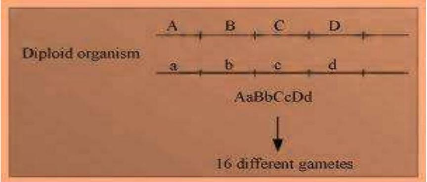
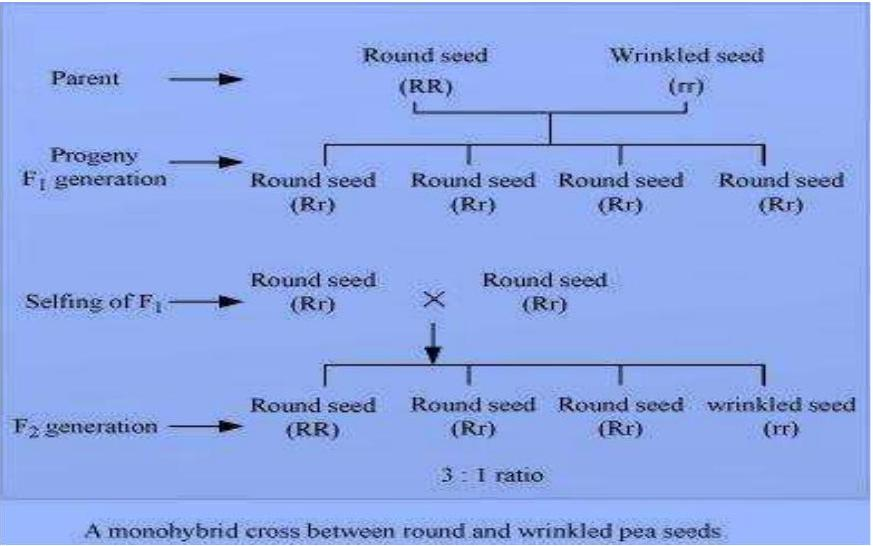
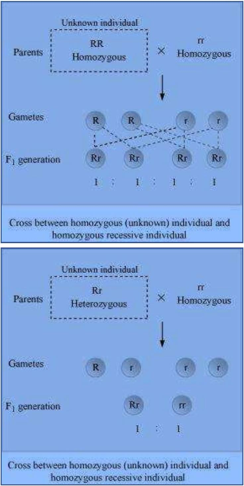
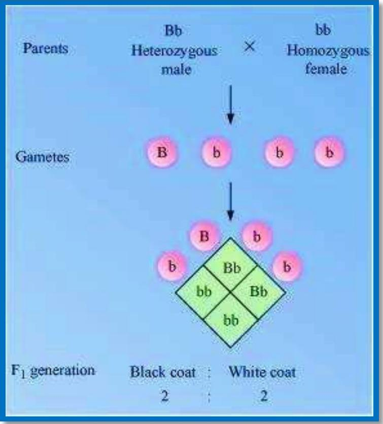
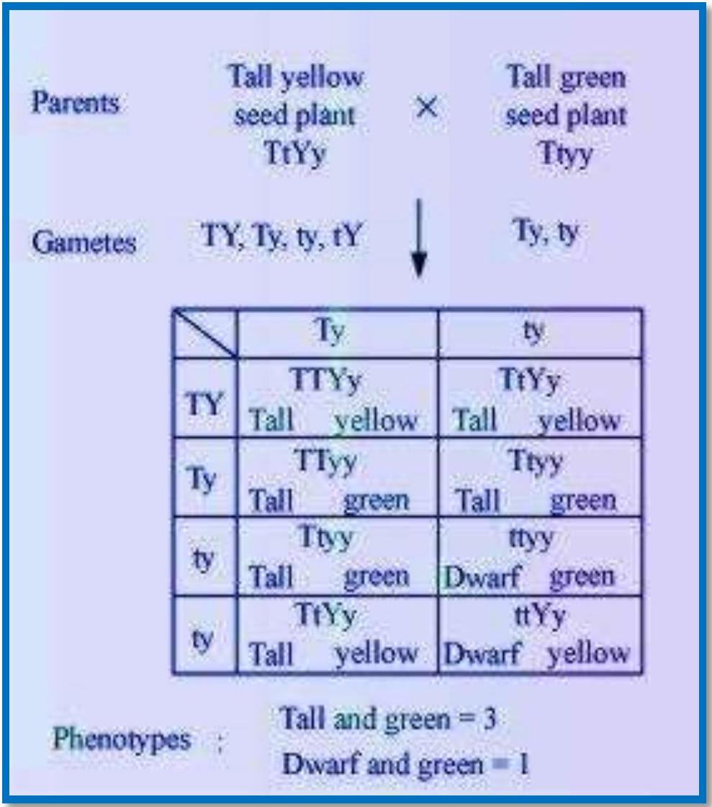
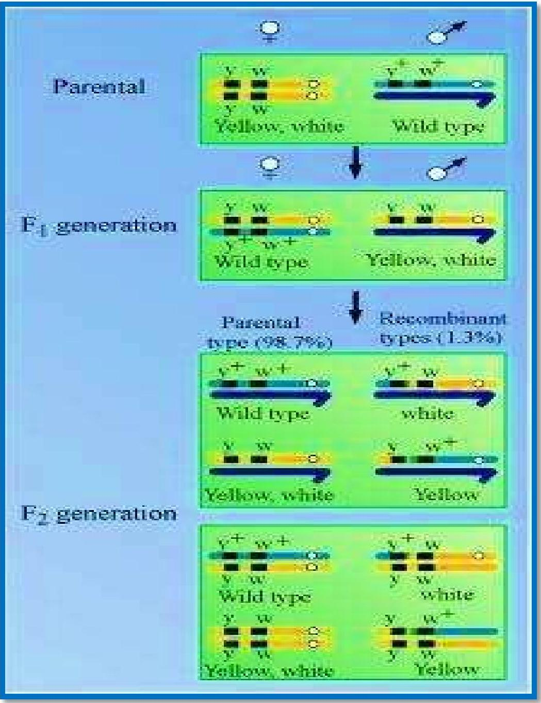
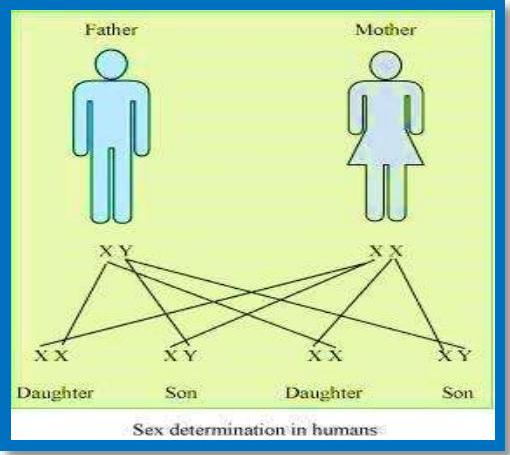
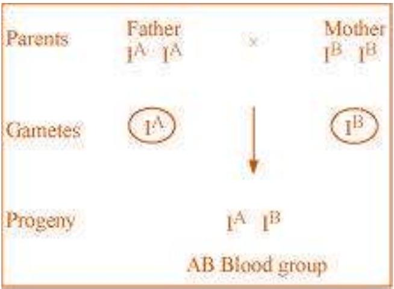
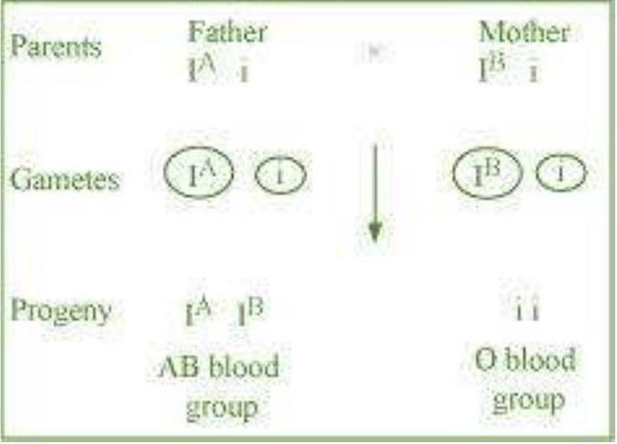
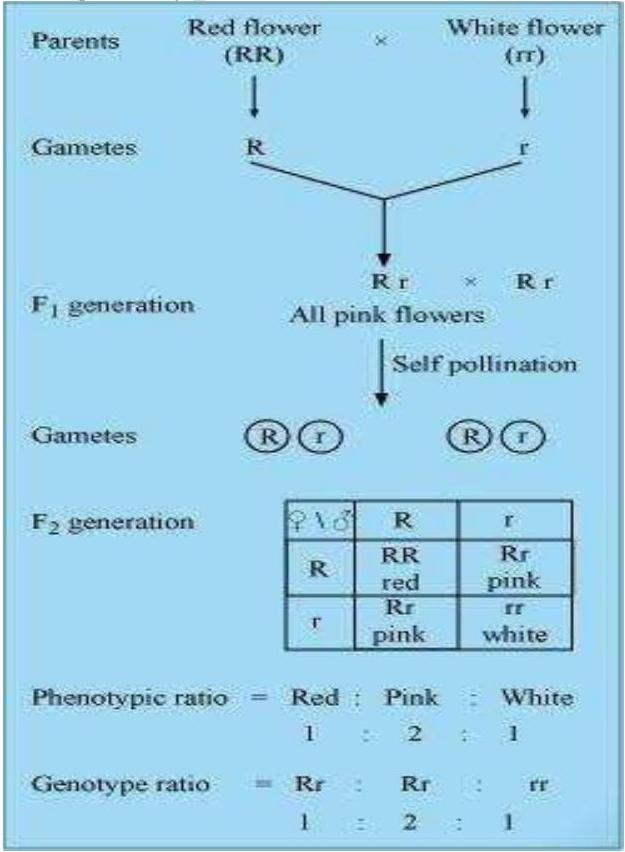

Mention the advantages of selecting pea plant for experiment by Mendel.
Differentiate between the following -
Dominance and Recessive
| Dominance | Recessive | |
|---|---|---|
| 1. | A dominant factor or allele expresses itself in the presence or absence of a recessive trait. | A recessive trait is able to express itself only in the absence of a dominant trait. |
| 2. | For example, tall plant, round seed, violet flower, etc. are dominant characters in a pea plant. | For example, dwarf plant, wrinkled seed, white flower, etc. are recessive traits in a pea plant. |
Homozygous and Heterozygous
| Homozygous | Heterozygous | |
|---|---|---|
| 1. | It contains two similar alleles for a particular trait. | It contains two different alleles for a particular trait. |
| 2. | Genotype for homozygous possess either dominant or recessive, but never both the alleles. For example, RR or rr | Genotype for heterozygous possess both dominant and recessive alleles. For example, Rr |
| 3. | It produces only one type of gamete. | It produces two different kinds of gametes. |
Monohybrid and Dihybrid.
| Monohybrid | Dihybrid | |
|---|---|---|
| 1. | Monohybrid involves cross between parents, which differs in only one pair of contrasting characters. | Dihybrid involves cross between parents, which differs in two pairs of contrasting characters. |
| 2. | For example, the cross between tall and dwarf pea plant is a monohybrid cross. | For example, the cross between pea plants having yellow wrinkled seed with those having green round seeds is a dihybrid cross. |
A diploid organism is heterozygous for 4 loci, how many types of gametes can be produced?

Explain the Law of Dominance using a monohybrid cross.

Define and design a test-cross.

Using a Punnett Square, workout the distribution of phenotypic features in the first filial generation after a cross between a homozygous female and a heterozygous male for a single locus.


When a cross in made between tall plant with yellow seeds (TtYy) and tall plant with green seed (Ttyy), what proportions of phenotype in the offspring could be expected to be
tall and green.
dwarf and green.
Two heterozygous parents are crossed. If the two loci are linked what would be the distribution of phenotypic features in F1 generation for a dibybrid cross?

Briefly mention the contribution of T.H.
Morgan in genetics.
What is pedigree analysis? Suggest how such an analysis, can be useful.
How is sex determined in human beings?

A child has blood group O.
If the father has blood group A and mother blood group B, work out the genotypes of the parents and the possible genotypes of the other offsprings.


Explain the following terms with example
Co-dominance
Incomplete dominance

What is point mutation? Give one example.
Who had proposed the chromosomal theory of the inheritance?
Mention any two autosomal genetic disorders with their symptoms.